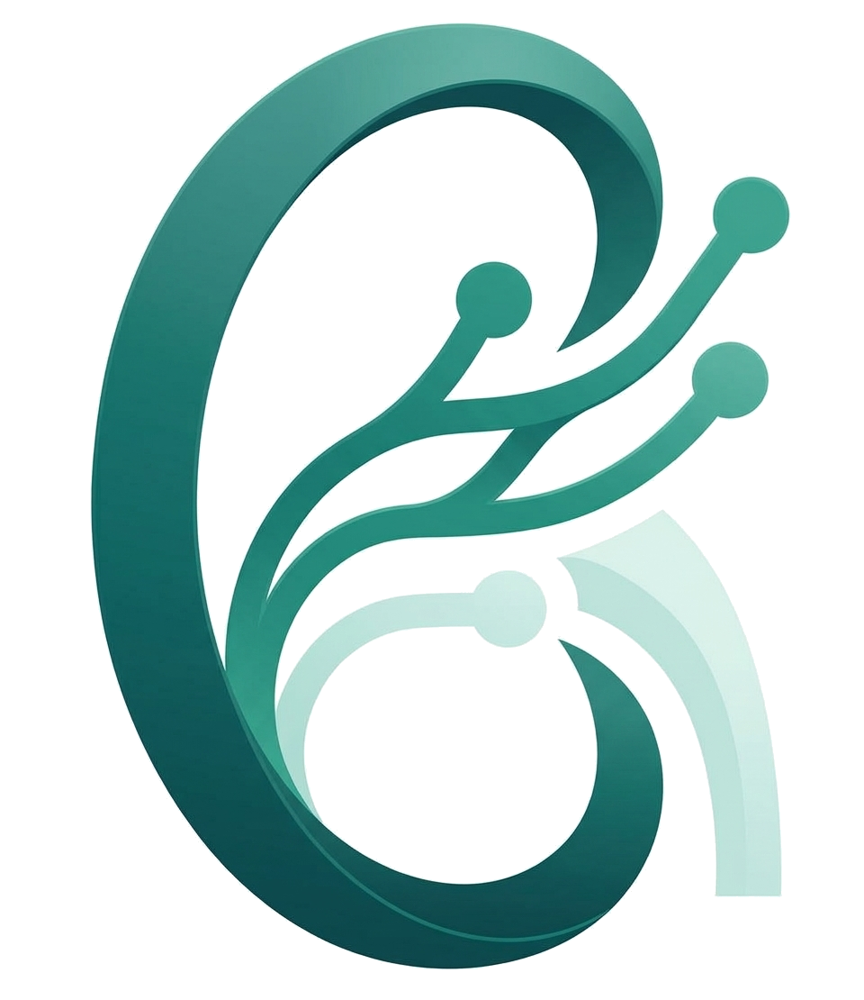

Unidade de hemodiálise
Comunicações
Solicitações de avaliação, avisos e tarefas da equipe. Envie para um ou mais grupos profissionais, perfis ou usuários. As solicitações de avaliação feitas na evolução também chegam aqui.

Hu-NefroGestão em nefrologiaSolicitações de avaliação, avisos e tarefas da equipe. Envie para um ou mais grupos profissionais, perfis ou usuários. As solicitações de avaliação feitas na evolução também chegam aqui.